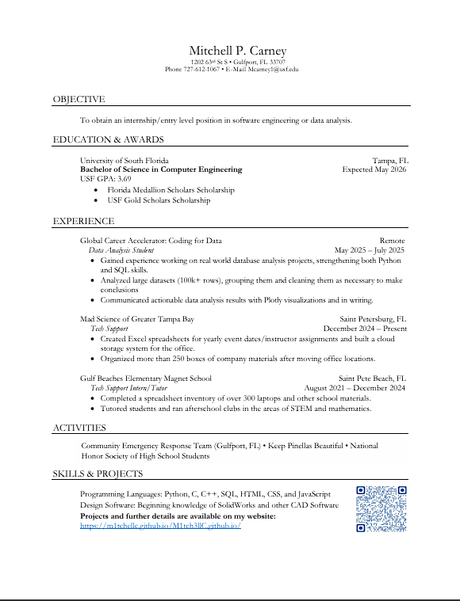

This page is where you can find my resume to learn more about my work experiences, education, skills and more. It is an unfinished copy, with the objective section left unfinished, since that will change from job to job. I have included a picture preview and a PDF Link below:
